2.2 知识图谱的数值表示
知识图谱的数值表示
学习目标
- 了解知识图谱有哪些重要的数值表示方法.
- 理解知识图谱相关数值表示的方法.
数值表示概述
- 随着深度学习模型的应用日益广泛, 如何将知识图谱作为背景知识融合进深度学习模型成为一个关键技术问题. 基本的思路是将知识图谱中的点与边表示成数值化的向量. 不同的向量表示在实际应用中有着不同的效果, 如何将知识图谱中的实体和关系求得最优的向量化表示, 是当前知识图谱表示学习所关注的核心问题. 知识图谱的表示学习旨在将知识图谱中的元素(包括实体, 属性, 概念等)表示为低维稠密实数向量. 知识图谱的向量化表示是面向机器处理的, 而符号化表示是面向人的理解的. 相对于向量化表示, 符号化表示易于理解, 可以实现符号推理. 两种表示各有其适用的场景.
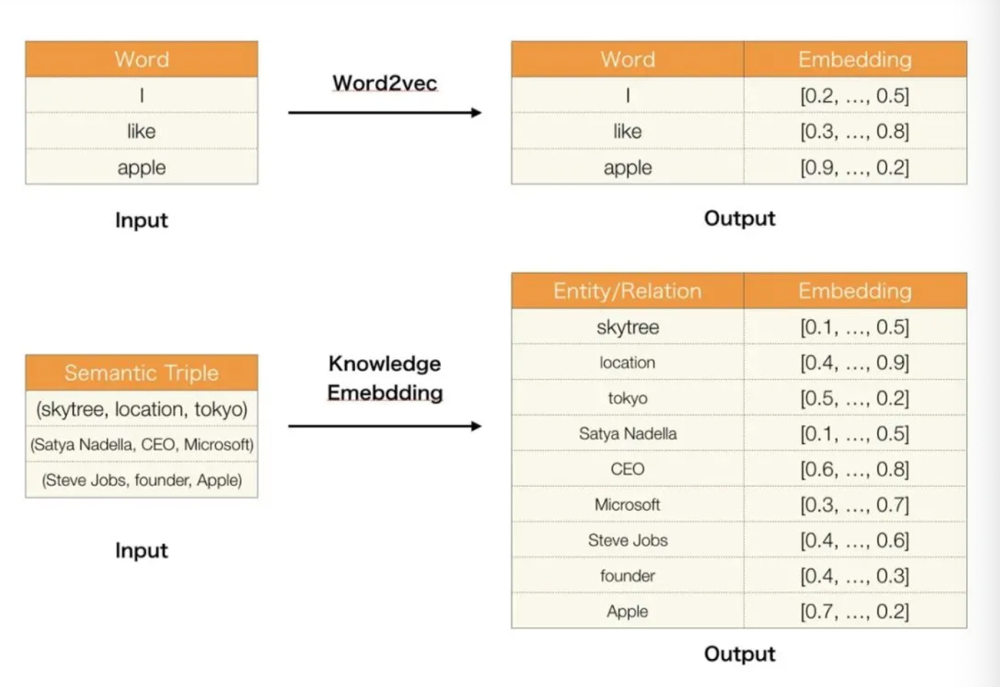
基于距离的模型
- 基于距离的模型中, 最具代表性的是SE模型, 基本思想: 当两个实体属于同一个三元组时, 它们的向量表示在投影后的空间中也应该彼此靠近. 因此损失函数被定义为向量投影后的距离.
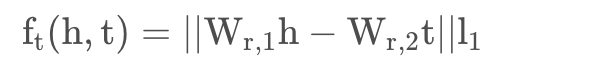
- 注意: SE模型采用形式较为简单的L1范数, 两个矩阵W(r,1)和W(r,2)用于三元组中头实体向量h和尾实体向量t的投影操作. 但由于SE模型引入了两个不同的投影矩阵, 导致很难捕获实体和关系之间的语义相关性!
基于翻译的模型
TransE模型
- TransE模型: 是基于翻译思想的模型. TransE认为在知识库中, 三元组< h, r, t >可以看成头实体h到尾实体t利用关系r所进行的翻译.
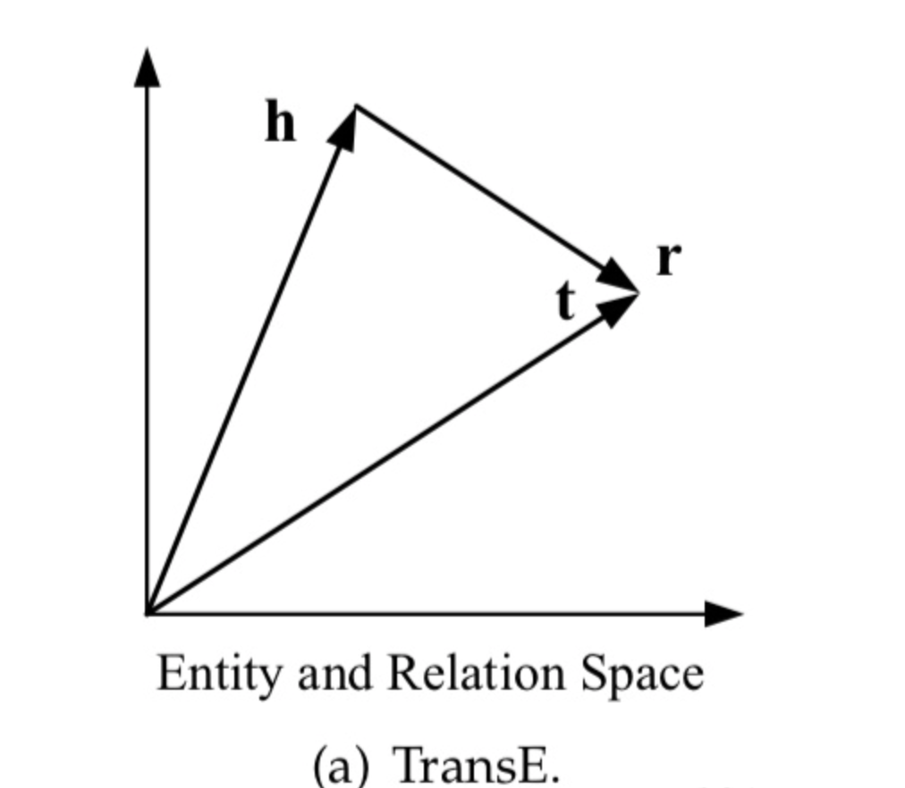
- 例如: 对于三元组<柏拉图, 老师, 苏格拉底>, 头实体"柏拉图"的向量加上关系"老师"的向量, 应该尽可能和尾实体"苏格拉底"的向量接近. 损失函数即可得到:
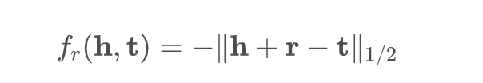
- 注意: 实际应用中, 为了增加区分度, TransE模型使用了Hinge Loss目标函数, 通过引入Max Margin机制使得正负例尽可能分开.
TransH模型
- 考虑到TransE模型中的h + r ~ t假设太强, 导致在自反, 一对多, 多对一关系下实体向量学习的错误. 比如, 对于自反关系r, < h, r, t > 和 < t, r, h >同时成立, 导致h = t. 对于多对一关系, 比如<柏拉图, 性别, 男>, <特朗普, 性别, 男>这两个三元组有着相同的关系和尾实体, 从而导致柏拉图和特朗普向量非常接近(一对多的关系类似). 但是柏拉图与特朗普除了在性别上相同, 其他方面显然完全不同.
- TransH模型: 为了解决上述问题, TransH模型放宽了h + r ~ t这一严格假设, 只要求头尾实体在关系r相对应的超平面上的投影彼此接近即可:
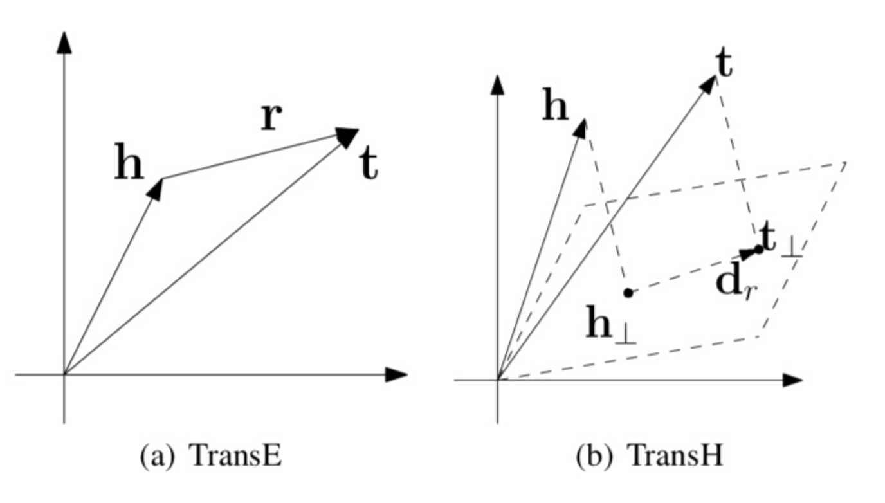
- 头实体向量h和尾实体向量t在超平面上利用法向量Wr映射为两个新的向量:
- 关系r在超平面上的向量表示为dr, 因此TransH的目标函数为:
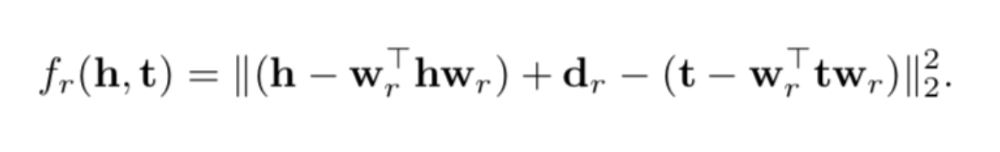
TransR模型
- 在TransE和TransH模型中, 实体和关系都在相同的空间中进行表示. 这种做法无法区分两个语义相近的实体在某些特定方面(关系)上的不同. 比如"马克思"和"恩格斯"可以认为是两个相似的实体, 但是<马克思, 民族, 犹太族>和<恩格斯, 民族, 德意志族>不同.
- TransR模型: 考虑到上述问题, TrasnR模型提出为每个关系构造相应的向量空间, 将实体与关系在不同的向量空间中分开表示.
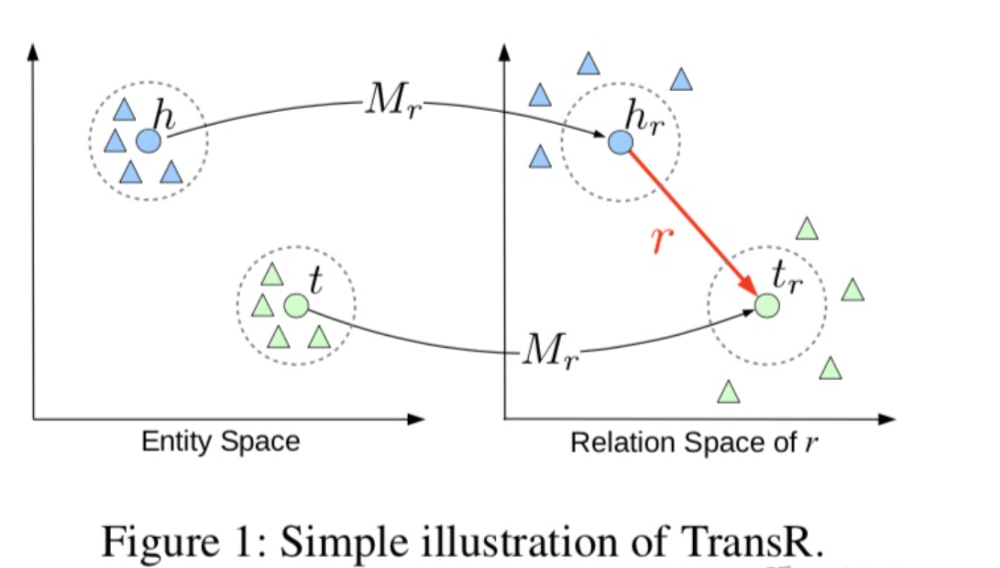
- TransR基本思想: 与TransH的基本思想很相似, 要求头尾实体在关系r相对应的向量空间中的投影彼此接近即可.(在TransH中是超平面)
- TransR模型将头实体向量h和尾实体向量t映射为两个新向量:
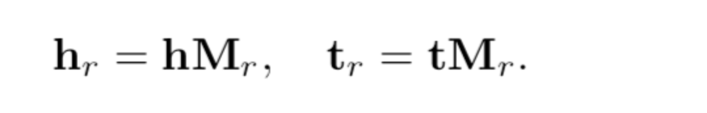
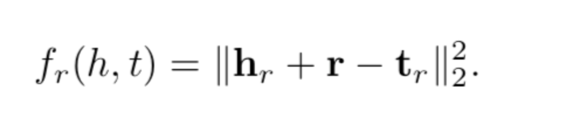
TransD模型
- TransR模型将实体和关系在不同的向量空间中表示, 这也带来了一些新问题:
- 第一: TransR模型利用复杂的矩阵计算将头尾实体映射到关系向量空间中, 增加了计算复杂度.
- 第二: 对于一个三元组来说, 头实体和尾实体很可能不是一类实体, 比如<柏拉图, 出生地, 希腊>, 那么"柏拉图"和"希腊"是两类不同的实体, 使用相同的映射矩阵Mr很明显不合理.
- 第三: TransR模型中实体的映射关系仅有关系决定, 但显然实体本身对映射也有影响.
- TransD模型: 考虑到上述问题, TransD模型认为映射函数应该与实体, 关系同时相关!
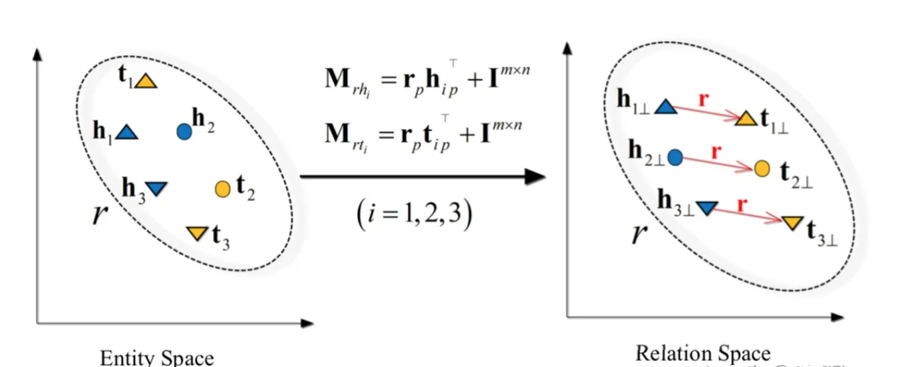
- TransD模型修改了映射函数: I(m*n)是单位矩阵, 头实体和尾实体分别用两个不同的映射矩阵M(rh)和M(rt)进行投影.
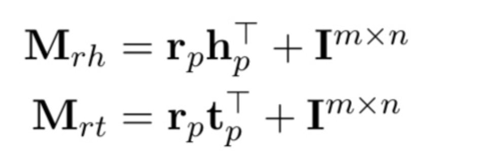
- 头实体的映射矩阵由关系向量rp与头实体映射向量hp共同决定; 尾实体的映射矩阵由关系向量rp与尾实体映射向量tp共同决定:
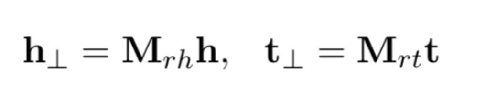
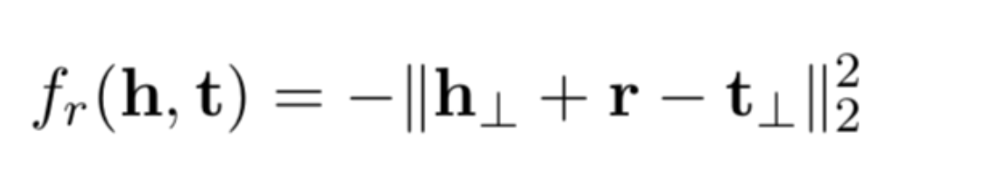
其他知识表示方式
谓词逻辑
- Predicate Logic: 命题是一个非真即假的陈述. 比如, "亚里士多德出生于波伊提乌"就是一个命题. 命题可以通过谓词>来表达, 谓词的一般形式是P(x1, x2, ..., xn). 其中, P是谓词的名称, xi是谓词的项. xi既可以是一个常量(亚里士多德), 也可以是一个变量. 在某个特定领域, 谓词P可以表达领域对象之间的关系, 也可以表达函数. 比如, BirthPlace(亚里士多德, 波伊提乌)表达了"亚里士多德出生于波伊提乌", 实质上表达了亚里士多德和波伊提乌之间的关系. Philosopher(亚里士多德)表示亚里士多德是一个哲学家这一事实, Philosopher(x)是一个函数.
- 在谓词上可以施加不同的操作:
- 否定(Negative)
- 析取(Disjunction)
- 合取(Conjunction)
- 蕴含(Implication)
- 为了进一步刻画谓词和个体之间的关系, 在谓词逻辑中引入两个量词:
- 全称量词 (Universal Quantifier)
- 存在量词 (Existential Quantifier)
产生式规则
- Production Rule: 产生式规则常用于表示事实与规则, 以及相应的不确定性度量. 产生式规则广泛应用于形式语言语法描述, 自动规划, 专家系统, 动作选择等. 产生式规则是一种形如"条件-动作"的规则, 基本形式如下:
- IF < condition > THEN < conclusion >
- 注意: 上述公式中, condition被称为前件, 表示前提条件, 各个条件可以利用合取, 析取等逻辑连接词进行不同的组合; conclusion被称为后件, 表示当前条件为真时, 应采取的动作!
- R1: IF 病人发烧 AND 咳嗽 THEN 病人得了病毒性感冒
- 很多产生式规则具有不确定性. 比如, R2表达了一个具有长期吸烟史的病人罹患肺部疾病的概率高达0.9:
- R2: IF 病人具有长期吸烟史 THEN 该病人罹患肺部疾病(0.9)
- 产生式规则与逻辑蕴含有着相同的基本形式, 但是在语义上, 逻辑蕴含P=>Q只能表达如果命题P为真, 则Q一定为真. 产生式规则的后件部分不仅可以是命题, 还可以是动作. 比如, R3的后件就是一个动作而非命题.
- R3: IF 病人得了病毒性感冒 THEN 给予抗病毒治疗
- 基于给定的一组基本事实和一组产生式规则(通常又被称为规则库), 我们就可以进行推理以求解问题. 这就是产生式系统的基本思想. 比如, 可以定义一套动物识别的规则, 从某个动物的基本特征描述出发, 选择匹配规则(与前件部分的匹配)进行推理, 将这样的过程持续下去直至满足推理的终止条件.
- 产生式规则是一种自然的, 清晰的, 可扩展的知识表示. 擅长表达具有因果关系的过程性知识, 在医疗诊断, 故障诊断等应用中常能取得一定的效果, 但是在实际应用中会碰到规则冲突, 规则失配等难题. 总体而言, 产生式规则有其使用场景, 但不足以表达现实世界的复杂语义, 还需要同很多其他知识表示协同运用才能较好的落地.
框架表示
- Frame: 框架表示是以框架理论为基础发展起来的一种结构化的知识表示. 框架理论认为, 人类对现实世界中各类事物的认知都是以框架的结构存储在记忆中的. 当人面临新的情境时, 会从记忆中找出一个合适的框架, 并根据实际情况对这一框架的细节进行加工, 修改, 补充, 形成对新情景的认识并存入人脑中.
- 框架是一种描述所论对象(事物, 时间, 概念)属性的数据结构. 框架通常由描述事物的各个方面的槽(Slot)组成. 槽用于描述所论对象某一方面的属性. 每一个槽可以拥有多个侧面(Facet). 每个侧面可以描述相应属性的一个方面, 而且每个侧面可以拥有多个值. 槽和侧面所具有的属性值分别被称为槽值和侧面值. 除了槽, 侧面及其值之外, 在框架中还可以定义约束, 用于约束槽和侧面的合理取值:
< 框架名 >
< 槽名1 > : < 侧面11 > : < 值111, 值112, ... , 值11k1 >
......
< 侧面1m > : < 值1m1, 值1m2, ... , 值1mkm >
< 槽名2 > : < 侧面21 > : < 值211, 值212, ... , 值21k1 >
......
< 侧面2m > : < 值2m1, 值2m2, ... , 值2mkm >
< 约束 > : < 约束1 >
......
< 约束m >
框架名: < 哲学家 >
类属: < 人物 >
工作: 范围: (教学, 研究)
默认值: 研究
性别: (男, 女)
类型: (< 唯物主义哲学家 >, < 唯心主义哲学家 >)
- 注意: 槽或者侧面的取值可以是另一个框架. 框架之间的相互引用可以实现框架表示的复用.
- 框架之间可以定义isA关系, 比如< 哲学家 >框架是< 职业 >的子框架.
- 框架在当前的大数据知识图谱工程背景下对于理解文本描述的事件数据极为重要. 互联网媒体的新闻数据, 金融的公告数据都是在表达事件, 而事件的语义可以很自然地表达为框架. 事件框架赋予机器认知事件数据的基本框架, 是这类数据结构化处理的必经路径.
树形知识表示
- 树形结构的知识表示, 可以用于表达复杂条件组合下的决策和动作. 决策树就是最经典的树形知识表示.
- 决策树: 决策树是一种用于分类的树形结构, 一棵决策树由根节点, 若干中间节点和若干叶子节点组成. 根节点和中间节点对应一个属性, 相应属性分类的样本集合将被划入对应的子节点. 叶子节点表示最终的分类结果. 从根节点到叶子节点的每一条路径, 就代表了一种分类方案.
- 例如: 借贷决策树表达了根据收入水平, 信用卡张数, 是否有房, 以及年龄, 学历来判断是否同意给一个用户借贷的决策逻辑. 比如一个人的收入属于中等水平, 拥有的信用卡数大于或等于5张, 并且年龄小于或等于30岁, 则同意给他借贷. 反之如果一个人的收入水平较低, 而且没有房, 则不同意给他借贷.
- 故障树: 另一类常见的树形知识表示是故障树, 故障树是一种树形的逻辑因果关系图. 在故障树中, 父节点是产生故障的结果, 也称输出事件; 子节点是产生故障的原因, 也称为输入事件. 为了能够表达因果逻辑关系, 故障树利用逻辑符号连接子节点和父节点. 其中, "或"符号表示"发生任何一个输入事件, 输出时间都会发生"; "与"符号表示"只有所有输入事件发生, 输出事件才会发生".
- 例如: 电子文档丢失的原因可能是人工误操作, 也可能是非人工故障. 如果原因是非人工故障, 则可能是因为电脑断电且文档未保存.
概率图模型
- Probalistic Graphical Model: 贝叶斯网络, 也被称为信念网络或有向无环图模型, 是一种概率图模型, 也是不确定知识表示的典型方法. 一个贝叶斯网络就是一个有向无环图, 其中节点是一组随机变量X={X1, X2, X3, ... , Xn}, 节点之间的有向边(由父节点指向子节点)代表随机变量之间的影响. Xi -> Xj之间的有向边表示Xj的分布取决于Xi的取值. 通常, 我们又把Xi称作因(Cause), Xj称作Xi的果(Effect). 因此, 贝叶斯网络常被用于表达因果关系.
- 作为一种面向不确定性的知识表示, 贝叶斯网络可以视作基于随机变量之间的条件独立性(conditional independence)对X的联合分布的一种精简表示. 每个贝叶斯网络本质上表达了X的某个联合概率分布P上的若干条件独立性假设.
- 令G = (I, E)代表一个贝叶斯网络, 其中I表示图中节点的集合, E表示有向边的集合, X = {Xi}表示有向无环图中的某一个节点i所代表的随机变量. 贝叶斯网络G = (I, E)所表达的基本语义是: 对于每个随机变量Xi, 给定Xi在G中的父节点集合Parent(Xi), 则Xi与所有Xi的非后代节点变量条件独立.
- 核心: 上述基本语义的内涵就是, 每个随机变量Xi仅直接依赖于其父节点集合Parent(Xi).
马尔可夫链
- Markov Chain (MC): 马尔可夫链是一种满足马尔可夫性的离散随机变量集合. 所谓的马尔可夫性, 是指某个随机变量序列的下一个状态仅仅与当前的状态有关, 而与之前的状态没有关系.
小节总结
- 本小节学习了知识图谱的数值表示概念, 和人工智能时代基于深度学习的模型同出一脉.
- 基于距离的模型: 代表性的SE模型, 基本思想是当两个实体属于同一个三元组时, 它们的向量表示在投影后的空间中也应该彼此靠近. 但由于SE模型引入了两个不同的投影矩阵, 导致很难捕获实体和关系之间的语义相关性.
- 基于翻译的模型:
- TransE模型: TransE认为在知识库中, 三元组< h, r, t >可以看成头实体h到尾实体t利用关系r所进行的翻译.
- TransH模型: TransH模型放宽了h + r ~ t这一严格假设, 只要求头尾实体在关系r相对应的超平面上的投影彼此接近即可.
- TransR模型: TrasnR模型提出为每个关系构造相应的向量空间, 将实体与关系在不同的向量空间中分开表示.
- TransD模型: TransD模型认为映射函数应该与实体, 关系同时相关.
- 其他知识表示方式:
- 谓词逻辑
- 产生式规则
- 框架表示
- 树形知识表示
- 概率图模型
- 马尔可夫链